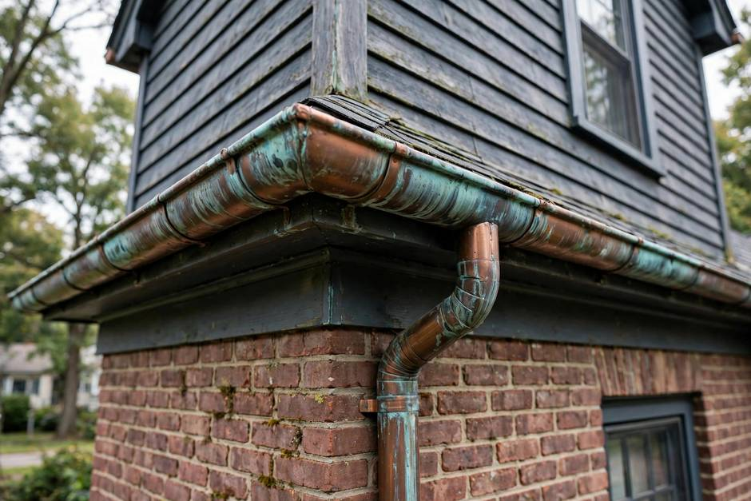
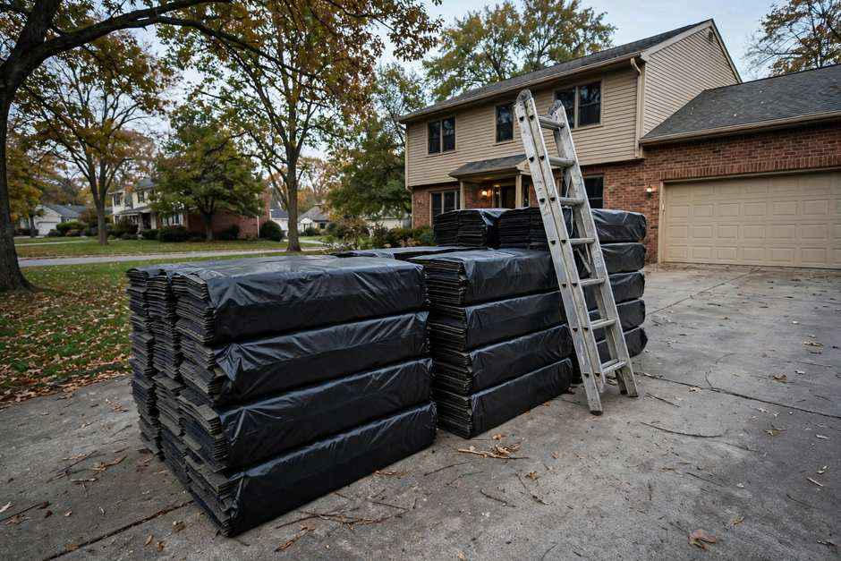
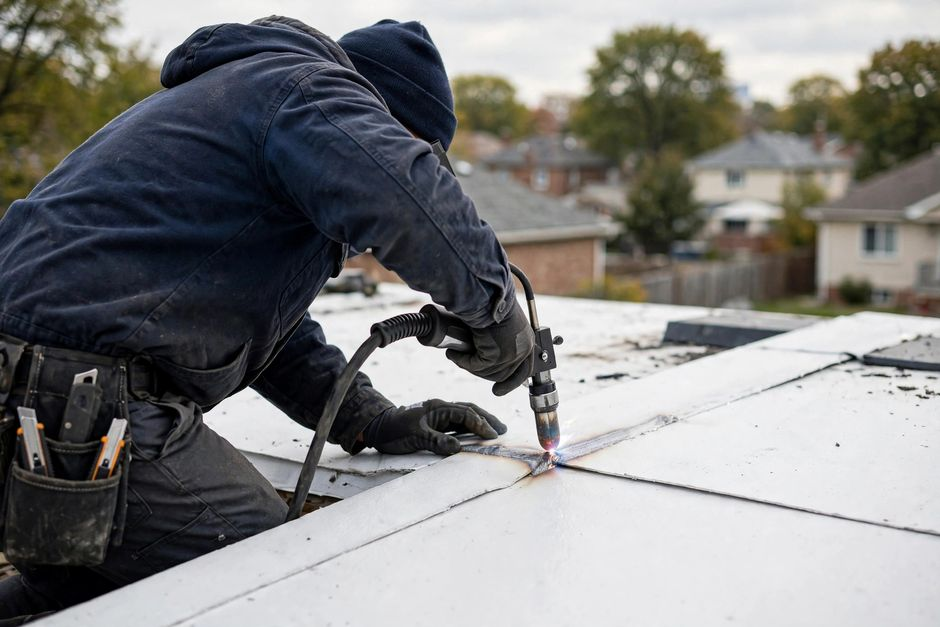
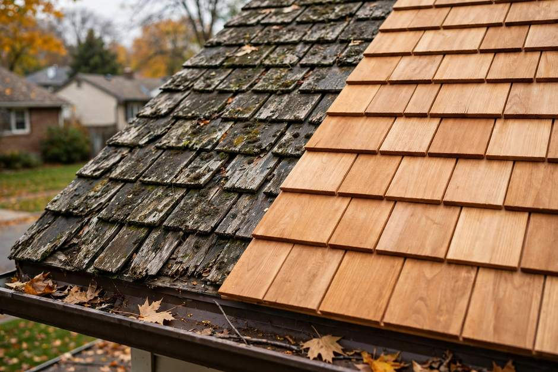
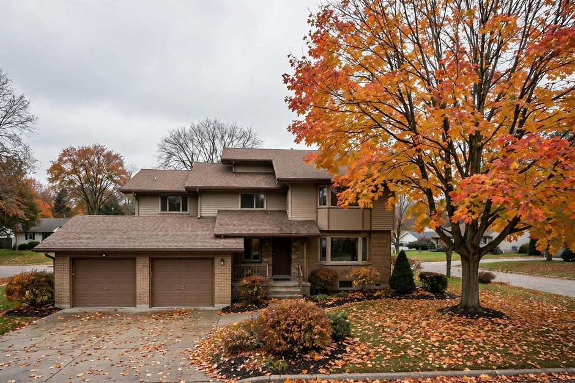

Written estimate before work
Pricing comes from a written on-site estimate, not from a figure on this site. The published guides quoted in the blog disagree with each other, which is why no price is presented here as this business’s price.
WP Exterior Inc is based at 638 Birchwood Ave, Des Plaines, IL 60018. This site covers roof repair, replacement, inspection, and storm damage for Des Plaines homes, with guides on ice dams, hail, ventilation, and winter preparation. Call during listed hours to discuss your roof.
Describe what you are seeing on the roof. Scope, terms, and availability are confirmed on the call.
Call Now (224) 802-4866 → 638 Birchwood Ave, Des Plaines, IL 60018.Google rating5.0 from 14 Google reviews
Des Plaines address638 Birchwood Ave, Des Plaines, IL
Listed hoursMon–Sat, closed Sunday
Phone(224) 802-4866

WP Exterior Inc is a roofing contractor based at 638 Birchwood Ave, Des Plaines, IL 60018. The service pages on this site cover roof repair, replacement, inspection, storm damage, flat-roof repair, metal and wood shake roofing, gutter installation, ventilation, and skylight installation for Des Plaines homes.
Des Plaines housing is mostly mid-century: the median year built is 1966 and 70.6% of homes were built before 1980 (ACS 2019–2023). That stock, plus freeze–thaw winters and summer storms, is the context for the guides on this site. Structure age is not roof age — what matters is what an inspection finds on a given roof.
Each page below explains one roofing topic for Des Plaines homes. Call during listed hours to confirm scope and terms for your roof.

Roof Replacement Full tear-off and replacement when repair no longer fits what an inspection finds. Covers decking, underlayment, ice barrier, flashing, and ventilation topics. Explore → Roof Repair
Leaks, missing or damaged shingles, flashing, and pipe boots — and how the repair-or-replacement decision is made from inspection findings.
Explore →
Roof Repair
Leaks, missing or damaged shingles, flashing, and pipe boots — and how the repair-or-replacement decision is made from inspection findings.
Explore →
 Roof Inspection
What an inspection covers: the roof surface, flashing, valleys, penetrations, and accessible attic conditions, with findings recorded in writing.
Explore →
Roof Inspection
What an inspection covers: the roof surface, flashing, valleys, penetrations, and accessible attic conditions, with findings recorded in writing.
Explore →
 Emergency Roof Repair
What to do first when water is coming in or storm damage opens a roof: interior control, safety, documentation, and when to call.
Explore →
Emergency Roof Repair
What to do first when water is coming in or storm damage opens a roof: interior control, safety, documentation, and when to call.
Explore →
 Storm Damage Roof Repair
Hail and wind damage on one page: granule loss, bruised shingles, creasing, documentation, and the lawful contractor role with insurers.
Explore →
Storm Damage Roof Repair
Hail and wind damage on one page: granule loss, bruised shingles, creasing, documentation, and the lawful contractor role with insurers.
Explore →

Flat Roof Repair Flat and low-slope repair topics: ponding, seams, flashing, drains, and tie-ins where low-slope sections meet pitched roofs. Explore → Metal Roofing
Metal roofing for Des Plaines homes: standing seam and exposed-fastener panels, snow shedding, hail behavior, and guide lifespans.
Explore →
Metal Roofing
Metal roofing for Des Plaines homes: standing seam and exposed-fastener panels, snow shedding, hail behavior, and guide lifespans.
Explore →

Wood Shake Roofing Cedar and wood shake topics: maintenance reality in Illinois humidity, guide lifespans, and why existing shake must be removed rather than overlaid. Explore → Gutter Installation
Gutters, downspouts, fascia, and soffits as the roof’s drainage and ventilation edge — and how failed gutters feed ice dams.
Explore →
Gutter Installation
Gutters, downspouts, fascia, and soffits as the roof’s drainage and ventilation edge — and how failed gutters feed ice dams.
Explore →
 Roof Ventilation Installation
Attic ventilation as part of the roof assembly: intake and exhaust, the ice-dam mechanism, and the limits of ventilation alone.
Explore →
Roof Ventilation Installation
Attic ventilation as part of the roof assembly: intake and exhaust, the ice-dam mechanism, and the limits of ventilation alone.
Explore →

Skylight Installation Skylight topics: flashing and curbs as repeat leak points, the reflash-or-replace question, and work bundled with re-roofing. Explore → Roof Insurance Claim Help
General information about the claim process after storm damage: documentation, the adjuster visit, and what Illinois law requires of contractors.
Explore →
Roof Insurance Claim Help
General information about the claim process after storm damage: documentation, the adjuster visit, and what Illinois law requires of contractors.
Explore →
A roof decision starts with questions: what is wrong, what the options are, and what the work involves. The facts on this site that can be checked are the address, the listed hours, and the Google reviews. Scope and price are for a phone conversation and a written estimate.
Pricing comes from a written on-site estimate, not from a figure on this site. The published guides quoted in the blog disagree with each other, which is why no price is presented here as this business’s price.
Most Des Plaines homes were built before 1980, with a median year built of 1966 (ACS 2019–2023). Freeze–thaw winters, snow, and summer storms shape what goes wrong — and what an inspection looks for.
Call during listed hours to confirm scope, terms, and availability for your roof. No license, warranty, brand, insurance-outcome, or response-time claim is made anywhere on this site.
Call (224) 802-4866 during listed hours and describe what you are seeing. The call is the way to confirm scope, terms, and availability for your roof.
An inspection looks at the roof surface, flashing, valleys, penetrations, and accessible attic conditions, and records what is found so the estimate reflects the roof as it is.
Pricing comes from a written on-site estimate that sets out the scope discussed. No price on this site is presented as this business’s price.
Scheduling, materials, and the order of work are agreed before work starts. Permit and inspection questions are worth raising at this stage, before work begins.
The work is walked through when it is finished, so questions about what was done can be raised while the details are still fresh.
Call (224) 802-4866 during listed hours and describe what you are seeing. The call is the way to confirm scope, terms, and availability for your roof.
Most roof trouble in Des Plaines traces to a small set of causes: ice dams and freeze–thaw in winter, hail and wind in the severe-weather months, and aging materials on mid-century stock. Each problem below is explained in general terms; the guides on the blog go further.
Ask a pro →Warm attic air melts snow on the upper roof; the melt refreezes at the cold eave and backs up under shingles. Ventilation is one part of the picture — air sealing and insulation matter too — and no single fix prevents ice dams on its own.
A stain that returns usually means the entry point was never found. Water can travel along decking and framing before it shows inside, so the stain and the leak are often in different places. Finding the source comes before patching it.
Wind lifts ridge caps and field shingles, and creased shingles may look intact from the ground while the seal is broken. After a storm, ground-level checks — missing tabs, granules at downspouts, dented metal — come before any decision about repair.
Flat and low-slope sections — additions, porch roofs, dormers — shed water slowly. Standing water stresses seams and flashing, and freeze–thaw cycles open them further. Drainage, seams, and tie-ins to pitched roofs are where leaks usually start.
“Patryk was great to work with and extremely professional. I highly recommend WP exteriors and plan on using them again in the future!”
Brian Avila GaonaGoogle review · 5 months ago · Roof inspection
“I use WP Exteriors to repaint my roof and do as some tuckpointing on the exterior of my building. Pat and his team were very professional and communicative. They did a good job explaining what needs to be done to my home immediately and what I can plan for in the future. I will definitely be using them in the future.”
Patricia MurrayGoogle review · 2 months ago
“Thank you Patrick for doing an amazing job. Great work me and my wife are very happy. Also thanks for being reliable.”
Phil NegronGoogle review · 2 months ago · Gutter repairs
Des Plaines has no official neighborhood list — the city’s only citywide subdivision is its eight electoral wards. The pages below cover areas with verified identities in city and federal sources, each on its own terms. WP Exterior Inc is based in Des Plaines and makes no service-area claim beyond the city.
Questions about an address? Call (224) 802-4866 during listed hours.
Common questions about roofing in Des Plaines, answered in general terms. For questions about a particular roof, call during listed hours.
(224) 802-4866 →No price is published on this site as this business’s price. Published guides for Chicago and Illinois disagree widely — for example, Angi’s Chicago figures updated 9 July 2026 and Modernize’s Illinois figures updated 27 August 2026 give different ranges for different job sizes — so pricing comes from a written on-site estimate. The cost guide in the blog shows the attributed ranges side by side.
Illinois roofers are licensed by the Department of Financial and Professional Regulation (IDFPR) under the Illinois Roofing Industry Licensing Act. A license can be checked on the IDFPR License Lookup, and the license number and exact licensed name must appear on contracts, bids, and advertising. Limited licenses cover residential property of 8 units or fewer; Unlimited licenses cover all property types.
Monday and Tuesday 7:30 AM–7:00 PM, Wednesday to Friday 7:30 AM–7:30 PM, and Saturday 8:30 AM–5:00 PM. The office is closed on Sunday. The phone number is (224) 802-4866.
Ask how to verify the license on the IDFPR Lookup, what the written scope covers, how permits and the final inspection are handled, and what happens if weather interrupts the work. For storm damage, ask what documentation the contractor provides and what remains the homeowner’s decision with the insurer.
That depends on what an inspection finds: how widespread the damage is, the condition of the decking and flashing, and how many layers are already on the roof. Localised damage with sound decking points toward repair; widespread failure across slopes points toward replacement. An inspection, not a rule of thumb, settles it.
WP Exterior Inc is based at 638 Birchwood Ave, Des Plaines, IL 60018. Call (224) 802-4866 during listed hours to discuss your roof.
Call (224) 802-4866 →Call (224) 802-4866 during listed hours to discuss your roof. WP Exterior Inc is based at 638 Birchwood Ave, Des Plaines, IL 60018. There is no contact form and no email address for this business on this site — the phone is the contact channel.